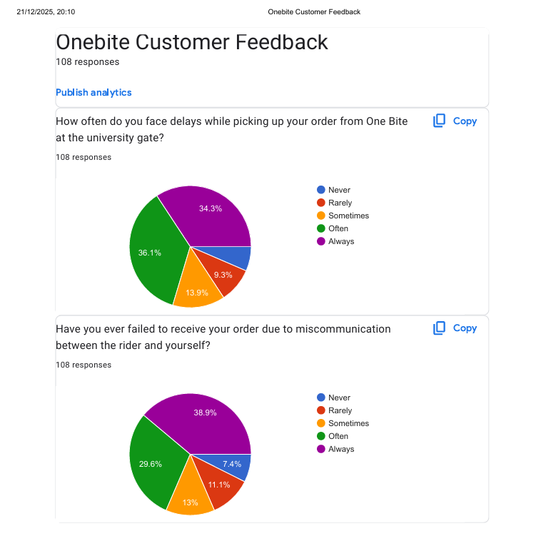
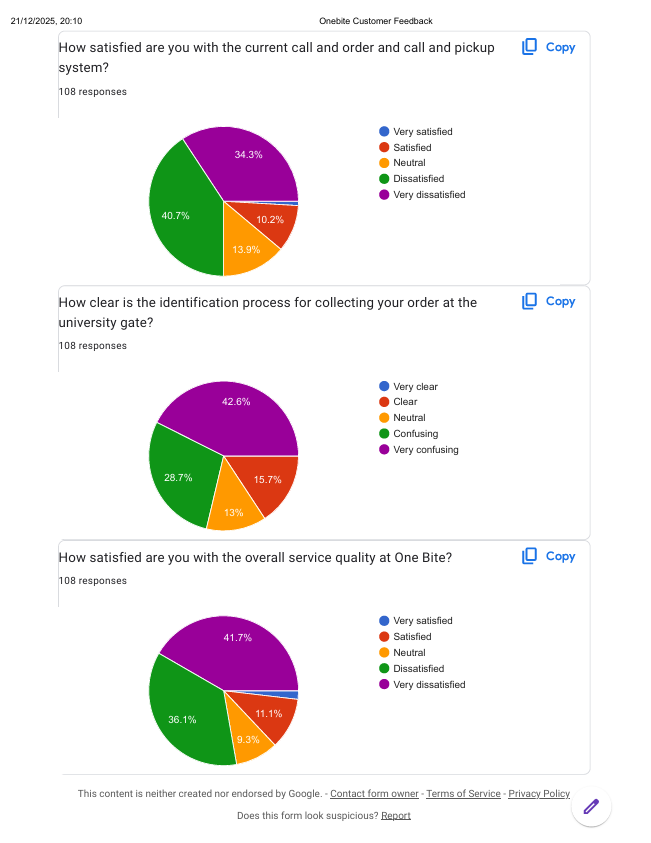

Supply Chain Digital Transformation: One Bite Restaurant
What
Supply chain analysis of One Bite, a fast-food restaurant near GIKI that takes student phone orders for pickup at the university gate.
Role
Visited One Bite and surveyed students, scored fixes in weighted decision matrices, estimated the no-show loss and drafted an adoption roadmap, in a team of 4.
Results
- Site visit and student survey found pickup no-shows, order mix-ups and owner-dependent staffing.
- Chosen solutions: WhatsApp Business automation, QR order verification and a workforce dashboard.
- No-show loss estimated at about Rs 75,000 a month from owner-reported figures.

Problem
One Bite takes phone orders from students for pickup at the university gate. Observation and a student survey showed pickup failures and no-shows, order mix-ups at peak hours, and dependence on the owner for staff supervision.
Method
- Restaurant visit, informal discussions with the owner and staff, and a student survey.
- Candidate technologies for each problem, for example a mobile app, WhatsApp automation and prepayment for no-shows.
- Weighted decision matrices with 1 to 5 scores for criteria such as cost, ease of implementation, scalability and effectiveness.
- Economic and operational impact analysis, and a SWOT analysis for each selected solution.
- No-show loss estimate from an owner-stated no-show rate of 5 to 10 percent (5 percent used), 40 orders per weekday and 60 per weekend day, owner-supplied prices, and 22 weekdays and 8 weekend days.
- Adoption roadmap with 4 weeks of setup and testing and full deployment in week 5.
Results
The matrices selected WhatsApp Business automation for no-shows, QR order verification for mix-ups and a workforce dashboard for staffing. Cost ranges taken from web sources are PKR 15k to 40k per month for WhatsApp automation, PKR 30k to 80k for QR verification and PKR 20k to 60k per month for the dashboard. The no-show loss comes to about Rs 75,000 a month. Only the no-show problem has a quantified benefit, and the other two are described qualitatively.
Limitations
- Savings are estimates from owner-reported figures, because actual order data was not available.
- Nothing was implemented or piloted, and the roadmap is a plan.
- Weighted scores rest on subjective 1 to 5 ratings, with cost ranges from web sources.
Figures


Tools
- Weighted decision matrix
- SWOT
- Economic impact analysis